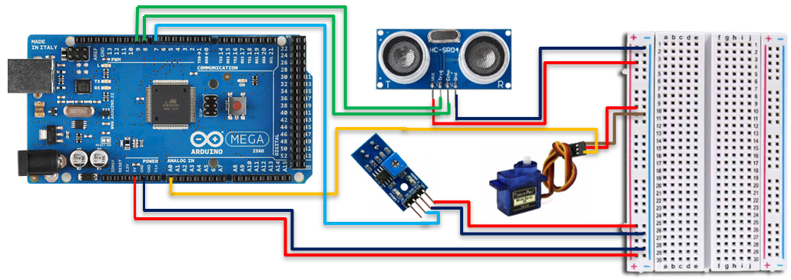
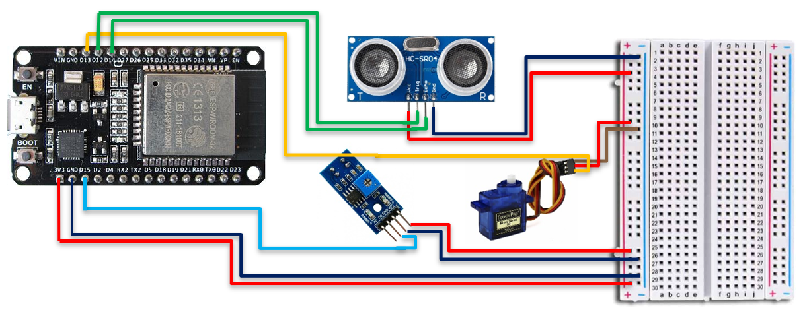

|
Proyectos de Desarrollo TecnológicoDesarrollar e implementar guías de prácticas STEMAutor: Paolo Fabrizio Rodríguez CárdenasJefe de Prácticas: Efrain Mayhua |


Conexionado y montaje del proyecto |
|
Mediciones del diseño

Material prinicipal: Cartón Altura del modelo: 14cm Largo y ancho de ambas bases a extremos: 4x7 cm Diámetro de los 2 orificios para el sensor de proximidad: 1.5cm Montaje final del proyecto gusanoConexionado usando Arduino MegaConexionado usando ESP32Disposición de pines de la ESP32Ahora, en cuanto al diseño y distribución a nivel de hardware, cabe mencionar que la placa de desarrollo ESP32 con la cual se trabaja, presenta 30 pines de los cuales, algunos son para tierra (2), para alimentación de 3.3V (1) y algunos funcionan como entradas analógicas (15), como entradas digitales (22) y como salidas digitales (20). |
Tweets by UCSP |
| Google - Inicio |